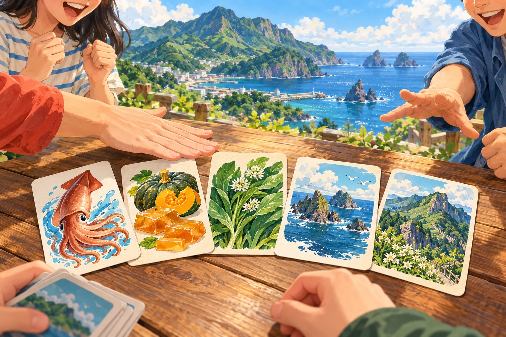
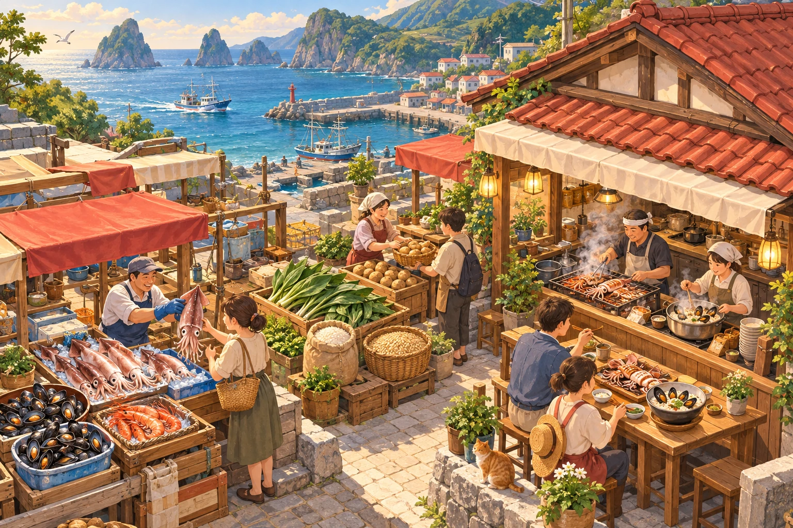
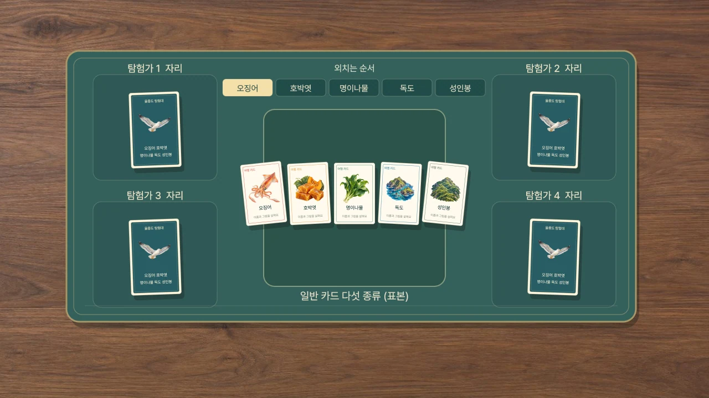
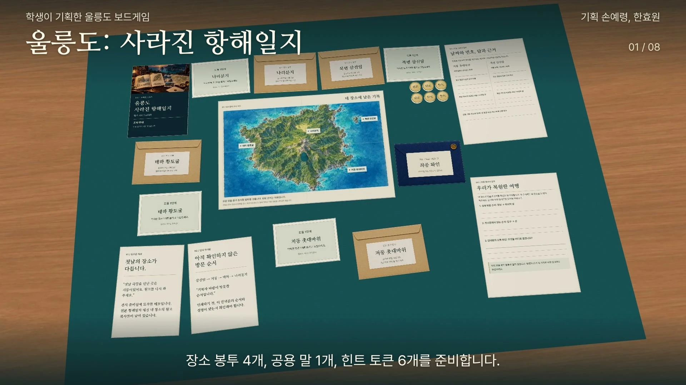
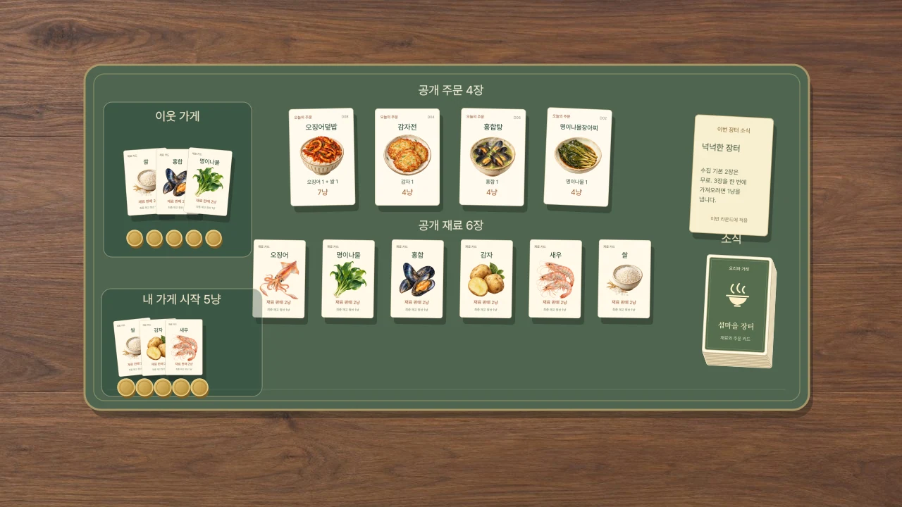

작품 01순발력 카드 놀이
오징어 호박엿
명이나물 독도 성인봉
작품 소개 —표
학생들의 아이디어에서 시작한 세 작품
함께 놀고 싶은 작품을 만나보세요.
세 작품의 표지
표지를 눌러 작품을 만나고,
짧은 체험에서 한 번 놀아보세요.

작품 01순발력 카드 놀이
—표
협력 기록 미스터리
—표

작품 03요리와 거래 게임
—표
함께 고르는 작품
계정 하나로 한 작품에 투표할 수 있습니다.
다른 작품을 선택하면 내 표도 함께 옮겨갑니다.
집계를 불러오는 중
참여 상태를 불러오는 중입니다.
실제 투표와 응원을 불러오고 있습니다.
학생들의 아이디어를 즐겨본 이야기를 들려주세요.
응원을 불러오는 중입니다.
응원은 로그인 후 남길 수 있습니다. 공개된 응원은 누구나 읽을 수 있어요.
실제 구성품으로 살펴보기
전체 테이블을 살펴보고, 카드와 기록을 가까이 만나보세요.
소개 페이지의 짧은 체험에서 시작할 수 있습니다.

이름을 외치고, 그림을 봐요.외친 이름과 그림이 같다면, 가운데에 손!01 순발력 카드 놀이
입으로는 다음 이름을,
눈으로는 지금 나온 카드를.
갈매기와 배가 나오면 몸도 움직여야 해요.
한 기기에서 각자 키나 버튼으로 함께 반응합니다.
종이 카드로는 가운데 더미에 손을 대세요.

날짜와 번호는, 같은 뜻일까요?“첫날 하람을 만난 곳은
저동이었어요.”
02 협력 기록 미스터리
원본은 사라졌고,
남은 기록은 서로 맞지 않습니다.
네 장소의 자료를 펼쳐 여행의 순서를 되찾으세요.
한 화면에서 자료를 나눠 읽는 협력 게임입니다.
진행자 없이, 힌트와 함께 끝까지 조사할 수 있어요.

오늘은, 무엇을 팔까요?재료를 모아 오늘의 한 접시로.03 요리와 거래 게임
내 가게에 필요한 건 쌀 한 장.
옆 가게에 필요한 건 명이나물 한 장.
이웃과 흥정하며 오늘의 주문을 완성하세요.
돈과 재료를 모두 공개하고 한 기기로 교대합니다.
3–4명에게 추천하며, 열 라운드 뒤 남은 돈으로 겨룹니다.
종이로 펼치는 또 하나의 테이블
화면 대신 종이로 놀고 싶은 날에는
카드와 조사 보드를 직접 인쇄해 준비할 수 있습니다.
학생들의 기획에서 시작했습니다
박성은, 서우림 손예령, 한효원 이신우, 정순혁
울릉마블도 함께 만나보세요 ↗